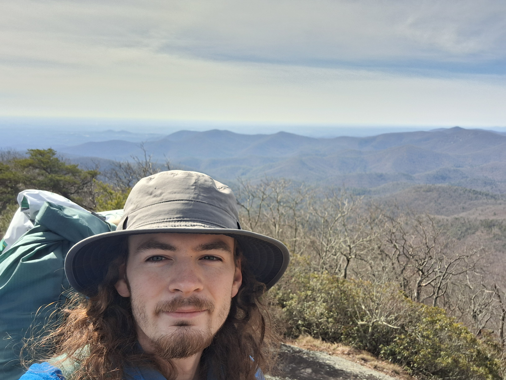

Day 2-3
current AT mileage: 34.2
mileage remaining: 2162.8

Day 2 was a day of mistakes. When I set out in the morning, well rested and filled with excitement, I knew it wouldn't be an easy day or night. While most of the day went quite smoothly, and was dotted with gorgeous overlooks, the evening and night could only be described as tumultuous. After 12.2 miles of hiking, The sun was getting low and I chanced upon a campsite complete with a steady clear creek that burbled like nature's lullaby, so I decided to stop and cook myself dinner there- rehydrated lime lentil curry was on the menu, and its heat and spice warmed my insides as if a smoldering wood burning stove sat in my gullet. Yet, when I searched my pack for my soap and scrounger, they were nowhere to be found. A dusting of panic fell from my head into my body as I realized I'd left it in the car- my mind immediately jumping to extreme conclusions. How was I meant to protect myself from norovirus now? Not to mention clean my dishes. Fortunately, the lentils came off easily with just water. Unfortunately, the new strength I had from my meal, unsettled nature from my mistake, and eagerness to get as close to my resupply at mountain crossings, I packed my bag and continued on as the sun set. This was my second mistake. Dusk had arrived by the time I relented to my tiredness and found a pass clearing with trees; though, the pass would funnel wind across my sorry campsite, and the trees, tall and broad, scraping the sky with not a horizontal branch in sight, proved near impossible to hang my food bag from, and nearly too broad to wrap my hammock straps around. My third mistake. Not to mention, the night had swallowed the day by then, and my hands were rendered slow and clumsy by the chill. Eventually, I got my hammock strung up well enough and my food hung in a hardly textbook but decidedly good enough spot, provided no bears decided to play pinata. At a frigid 24 degree low, the night became an impossible game of trying to seal every crevice around my quilts, and left me with far too little sleep for the long climb up blood mountain the next day. The only saving grace was my stockpile of Star Trek to pass the time.
Day 3, bittered by my lack of sleep, threw my thru into question. It would surely be a shame to quit so early, but this day felt impossible to repeat for months at a time. My shaky legs reluctantly carried me up to the peak of blood mountain, where miles of valley and blue ridge views greeted my tired eyes.
After a descent over countless stone steps and muddy stretches, I reached Mountain Crossings, where my first resupply was waiting for me. Here I rested for a while, soaking in the wonderful view and meeting several other thru hikers, most of which were staying the night at the hostel here. When I eventually continued, my legs were no less weary, but just a few miles down the trail a campsite presented itself; although dry, I was well stocked on water, and I couldn't pass up such a beautiful view.

Though the wind swayed my hammock and flapped my tarp all night, sleep was much easier found as the cold had let up considerably."